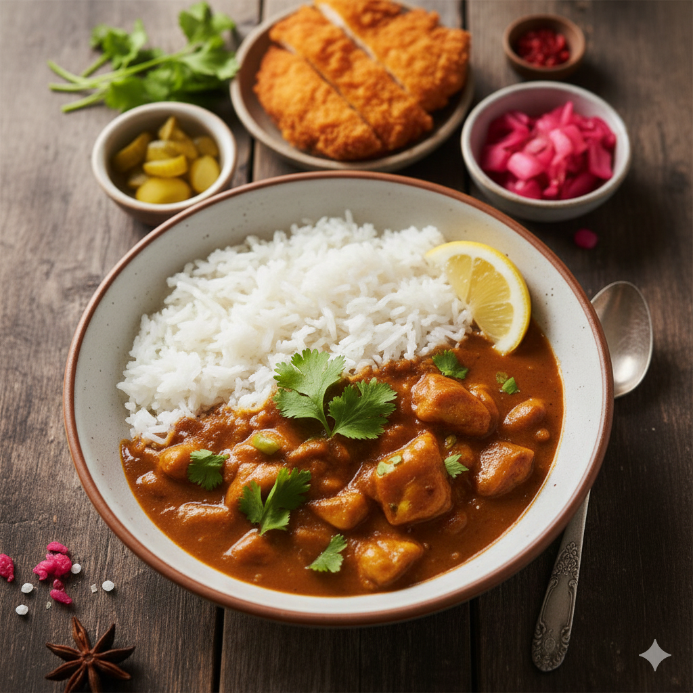

<!DOCTYPE html>
<html lang="en">
  <head>
    <meta charset="UTF-8" />
    <meta name="viewport" content="width=device-width, initial-scale=1.0" />
    <title>카레 레시피 페이지>카레>카레>카
    <link rel="stylesheet" href="css/style.css" />
  </head>
  <body>
    <div class="recipe-container">
      <header>
        <h1>🍛 카레 레시피</h1>
        <h2>실패 없는 카레 레시피</h2>
        <!-- 손 좀 보고 싶은 i 태그 -->
        <i>요리를 결심했는데 실패는 싫은 분들을 위한 레시피</i>
      </header>

      <div class="recipe-main-img">
        
      </div>

      <!-- 요리 요약 세션 -->
      <section class="section-box">
        <h3>요리 요약 정보</h3>
        <dl class="summary-list">
          <dt>난이도</dt>
          <dd>⭐</dd>
          <dt>조리시간</dt>
          <dd>20분</dd>
          <dt>인분</dt>
          <dd>4인분</dd>
          <dt>조리도구</dt>
          <dd>냄비, 그릇(볼), 식칼, 나무스푼</dd>
        </dl>
      </section>

      <!-- 재료 세션 -->
      <section class="section-box">
        <h3>준비 재료(4인분)</h3>
        <ul class="ingredient-list">
          <h4>메인 고기</h4>
          <li><strong>고기:</strong> 소고기or돼지고기 200g</li>
          <h4>필수 채소</h4>
          <li>
            <strong>채소:</strong>
            당근 50g(1/4개), 감자 150g(1개), 양파200g(3/4개)
          </li>
          <h4>분말 등 기타재료</h4>
          <li><strong>기타:</strong> 카레 분말 100g, 식용유 2스푼(20g)</li>
        </ul>
      </section>

      <!-- 조리 순서 세션 -->
      <section class="section-box">
        <h3>조리 순서</h3>
        <ol>
          <li><strong>채소 준비</strong></li>
          <ul>
            <li>작은 큐브 모양으로 썰어 준비해주세요</li>
          </ul>
          <li><strong>고기 채소 볶기</strong></li>
          <ul>
            <li>중불로 1~2분 정도 냄비를 예열</li>
            <li>
              식용유 두르고 고기>당근>감자>양파 순으로 중첩해서 볶아주세요
            </li>
            <!-- 글이 길어서 포맷 조정 필요해보임 -->
            <li>
              고기 겉표면이 갈색이 될 때까지 약 1~3분, 이후 당근 넣고 2분, 감자
              넣고 5분, 양파 넣고 2분간 더 볶아 주세요
            </li>
          </ul>
          <li><strong>분말 카레와 물 넣고 끓이기</strong></li>
          <ul>
            <li>
              그릇(볼)에 물과 카레 분말을 풀어 잘 섞어 준 후, 볶아둔 재료위에
              부어 농도가 날 때 까지 끓여 주세요
            </li>
          </ul>
          <li><strong>완성~!</strong></li>
          <ul>
            <li>밥 위에 얹어 맛있게 드세요</li>
          </ul>
        </ol>
      </section>

      <!-- 꿀팁 세션 -->
      <section class="section-box">
        <h3>꿀팁</h3>
        <blockquote>
          <p>
            대체하거나 추가해도 좋을 채소 : <br />
            양배추, 애호박, 고구마, 단호박, 버섯, 피망, 옥수수, 올리브<br />
            (통조림 캔 제품으로 된 것도 가능)
          </p>
        </blockquote>
        <blockquote>
          <p>고기는 카레용으로 사시면 손질 없이 바로 볶아서 사용 가능해요!</p>
        </blockquote>
        <blockquote>
          <p>
            재료 양과 물의 양은 1:1로 넣어 주세요<br />
            (물 1컵이면 고기+채소 합쳐서 1컵)
          </p>
        </blockquote>
        <blockquote>
          <p>돼지고기는 앞다리살 사용하면 좋아요</p>
        </blockquote>
      </section>

      <!-- 성분표 세션 -->
      <section class="section-box">
        <h3>📊 영양 성분</h3>

        <table class="nutrition-table">
          <caption>
            카레 1인분당 주요 영양소 함량 정보 표
          </caption>
          <thead>
            <tr>
              <th>영양소</th>
              <th>함량</th>
              <th>영양소기준치*</th>
            </tr>
          </thead>
          <tbody>
            <tr>
              <td>열량 (Calories)</td>
              <td>450 kcal</td>
              <td>-</td>
            </tr>
            <tr>
              <td>탄수화물</td>
              <td>65g</td>
              <td>20%</td>
            </tr>
            <tr>
              <td>단백질</td>
              <td>25g</td>
              <td>45%</td>
            </tr>
            <tr>
              <td>지방</td>
              <td>12g</td>
              <td>22%</td>
            </tr>
            <tr>
              <td>나트륨</td>
              <td>850mg</td>
              <td>43%</td>
            </tr>
          </tbody>
          <tfoot>
            <tr>
              <td colspan="3">
                *영양소기준치는 1일 영양소 기준치에 대한 비율입니다.
              </td>
            </tr>
          </tfoot>
        </table>
      </section>

      <!-- FAQ 세션 -->
      <section class="recipe-card faq">
        <h3>❓ 자주 묻는 질문 (FAQ)</h3>
        <dl class="faq-list">
          <div class="faq-item">
            <dt>Q. 카레가 너무 되직해졌을 때는 어떻게 하나요?</dt>
            <dd>
              A. 물이나 우유를 조금씩 넣으며 약불에서 저어주세요. 우유를 넣으면
              훨씬 부드러운 맛이 납니다.
            </dd>
          </div>

          <div class="faq-item">
            <dt>Q. 남은 카레는 얼마나 보관 가능한가요?</dt>
            <dd>
              A. 밀폐 용기에 담아 냉장 보관 시 2~3일, 냉동 보관 시 최대 2주까지
              가능합니다.
            </dd>
          </div>

          <div class="faq-item">
            <dt>Q. 아이들이 먹기엔 조금 매운 것 같아요.</dt>
            <dd>
              A. 플레인 요거트나 꿀을 한 큰술 섞어주면 매운맛이 중화되고 풍미가
              살아납니다.
            </dd>
          </div>
        </dl>
      </section>
    </div>
  </body>
</html>
